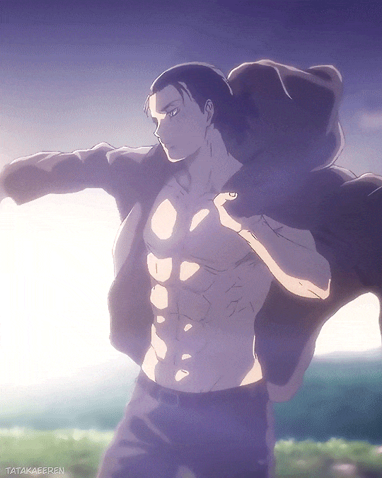

Эрен — молодой человек среднего роста и мускулистого телосложения.
У Эрена довольно длинное округлое лицо и бирюзовый цвет глаз (в манге, цвет глаз Эрена серый).
В манге у него длинные волосы тёмно каштанового цвета (в аниме цвет волос Эрена — серо-коричневый), лицо Эрена слегка загорелое.
После учёбы в кадетском училище физическая форма Эрена улучшилась, его мышцы стали более накаченными и крепкими, правда под мешковатой одеждой это незаметно.
Лучше всего Эрена характеризуют такие определения, как целеустремлённость, упорство, импульсивность.
